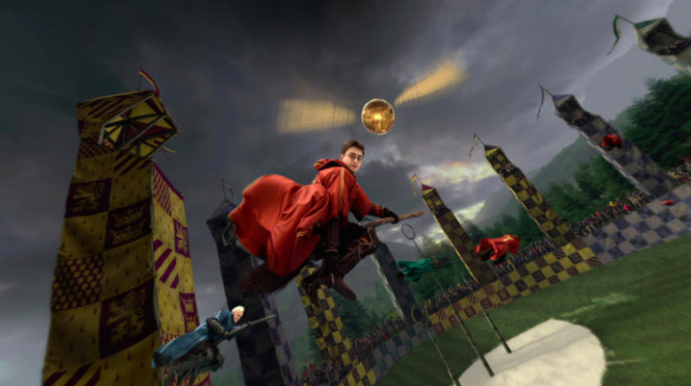

Criado pela escritora J.K. Rowling, o quidditch, ou quadribol, como é conhecido no Brasil, é o
esporte mais famoso do universo de Harry Potter, mas graças aos fãs dos livros e filmes do
bruxo,
ele deixou de ser fictício e passou a ser praticado no mundo inteiro.
O esporte foi criado oficialmente em 2005, por dois estudantes dos Estados Unidos, que o
batizaram
como " quadribol para trouxas " - na série, os "trouxas" são aqueles que não nasceram bruxos.
Eles não esperavam, mas a prática rapidamente se popularizou, e dois anos depois da primeira
partida, foi criada a International Quidditch Association, primeira organização oficial do
esporte
no mundo.
Para que o quadribol para trouxas pudesse acontecer, algumas adaptações tiveram que ser feitas,
já
que no mundo real não existem vassouras voadoras ou um pomo de ouro, espécie de bola encantada
que
voa sobre o campo.
A vassoura é representada por um bastão, que é usado entre as pernas dos jogadores, assim como
em
Harry Potter. Já o pomo de ouro é uma bola de tênis, que é carregada por um jogador neutro
vestido
de amarelo.
Para você que não entende nada da série, mas é fã de esportes, o quadribol funciona como uma
espécie
de mistura entre futebol americano, queimada e pega-pega.
Cada time conta com pelo menos sete jogadores, que ocupam as posições de apanhador, artilheiro,
batedor e goleiro. A partida termina quando o apanhador consegue pegar o pomo de ouro.
No total, o jogo é disputado com quatro bolas, duas delas são chamadas de balaços, e servem para
serem arremessadas contra os jogadores, como na queimada. Já as outras duas, apelidadas de
goles,
são carregadas pelos artilheiros, que precisam acertá-las em um dos três aros que ficam do outro
lado do campo.
